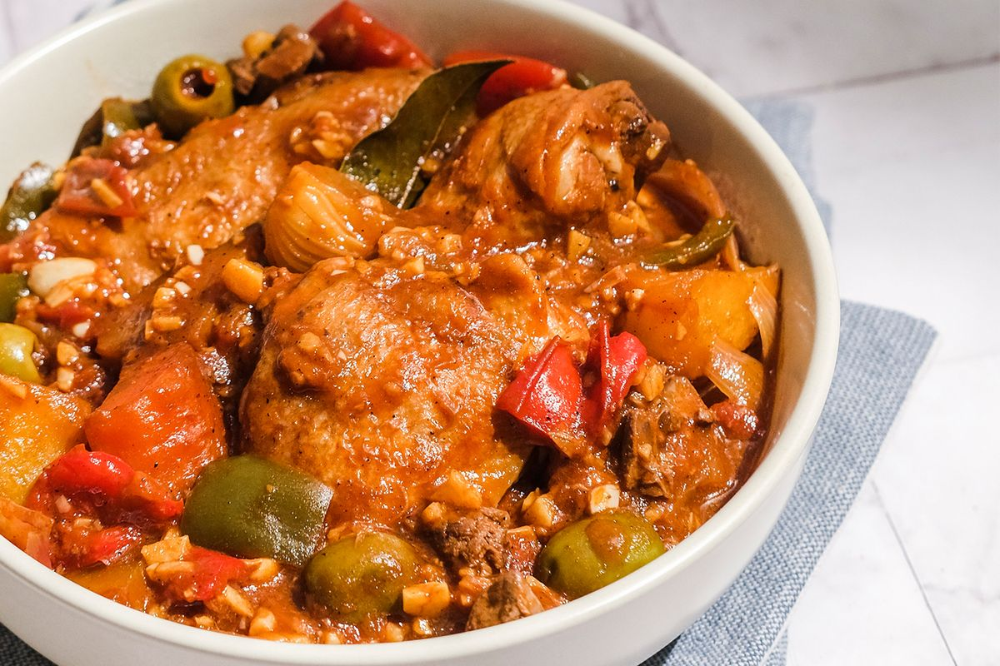

Recipe for Caldereta

Instructions
In a wide pan over medium heat, heat oil.
Add potatoes and carrots and cook until lightly browned.
Remove from pot and drain on paper towels.
Remove oil from the pan except for about 2 tablespoons.
Add onions and garlic and cook until softened.
Add beef and cook, stirring occasionally, until lightly browned.
Add tomato sauce, tomato paste, water, and chili peppers.
Bring to a boil, skimming scum that may float on top.
Season with salt and pepper to taste.
Lower heat, cover, and cook for about 1 to 1 ½ hours or until beef is tender.
Add potatoes, carrots, and continue to cook until tender.
Add liver spread and cheese, stirring to combine until well-distributed.
Continue to cook until cheese is melted and sauce is thickened.
Add bell peppers and olives cook for another 1 to 2 minutes
until tender yet crisp. Serve hot.
Ingredients
• Bottom Round Roast
• Tomatoes Sauce
• Potatoes
• Liver Spread
• Green Bell Pepper
• Cheddar Cheese
• Red Bell Pepper
• Oil
• Salt and Pepper